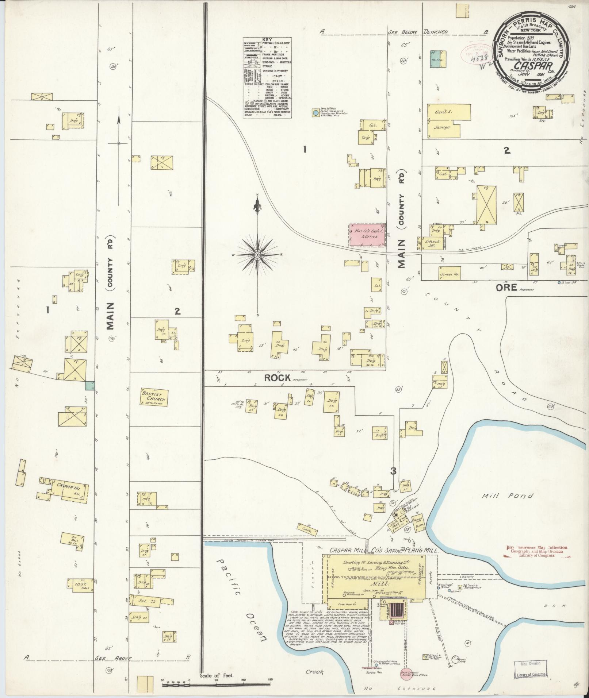

Politics
TODO
Blog
🚧 Caspar Water doesn't have a blog about water in Caspar. If we did, there's surely a rumor or two, about wells going dry or drill-rigs spotted drilling new wells.
🚧 A blog about software, though? The owner/operator could tell you that he works in open-source software, programs in Rust and Golang, works for Microsoft on the OpenTelemetry project, and other things about himself. He could talk about what a free, open-source water operating system would look like.
Our History
The Caspar Water System has roots dating back to the town's origins as a lumber community in the mid-19th century. Caspar grew around the Caspar Lumber Company, which operated until 1955.

This 1891 fire insurance map shows a 1½-inch fire hydrant on the modern-day Caspar Frontage Road West.
In its heyday, Caspar was a thriving company town on the Mendocino coast, with a sawmill, railway system, and infrastructure to support its workers. The water system developed during this period served the community's growing needs.
Over the decades, our water system has evolved through a number of ground water and surface water sources. Long-time residents still recall the prominent three-level water tower that once stood as a landmark in the community.
When the lumber mill closed, many of the town's original structures were dismantled, but the water system infrastructure remained and continued to develop to serve the changing community. Today's water system is classified as a County "small water system", serving a community with fewer than 15 connections.
Until 2010, the Caspar water system also operated a trucking station from a second well near Highway 1, but the system did not have sufficient treatment and was closed by the California division of drinking water. Today, the former trucking station and well are being used for goat farming.
System design
In modern times, the Caspar Water System has been described as a "chlorinator in the woods". We use a relatively simple process to provide clean and safe drinking water to our community.
- Source: Our raw water is sourced from a 188-feet deep well.
- Disinfection: The water undergoes chlorination to deactivate harmful bacteria and waterborne pathogens.
- Aeration: The water undergoes aeration to raise pH and oxidize iron.
- Storage: Treated water is stored in a 10,000-gallon concrete tank.
- Distribution: The water main has a linear layout with approximately 1 mile of pipe. While it starts with six-inch pipe, maintenance during our "ghost town" years has left the water main with a mixture of materials and combination of 6", 4", 3", and 2" pipe.
- Service: Our water system has 12 service connections, including the Caspar Community Center and the historic Caspar Inn.
- Pressure: Our water system delivers water using gravity feed with static pressures between 35psi and 60psi.
- Leakage: We estimate leakage at less than 100 gallons per day, which is substantially improved from years past.
Our treatment system addresses two primary quality concerns. The raw water measures pH 5.9, which is slightly acidic and cause for concern because acidic water leaches copper and lead from metal pipes and fixtures. We also have relatively high organic iron content.
The aeration process works by removing carbon dioxide from the water through natural off-gassing. It's the reverse of the process causing ocean acidification, because the water has a higher concentration of carbon dioxide than the atmosphere. The addition of O₂ to the water disrupts the following chemical equilibrium:
O₂ + HCO⁻ ⇌ HCO₃⁻
In winter months, we serve approximately 800 gallons per day. In summer months, we serve approximately 2,000 gallons per day. A test performed at our primary well in December 2020, at the tail end of a years-long drought, estimated that our system has a sustainable capacity to draw 8 gallons per minute.
Water
Caspar Water operates a single well for its modern-day system, however it has operated wells at several sites in its history. Our water treatment plant sits at the top of a hill spanning both the Jughandle creek and Caspar Creek watersheds, and Caspar Water's "sphere of influence" covers most of the area between these two bridges, both east and west of Highway 1.
The Caspar duck pond, across Fern Creek Road from our former water trucking station, serves as a year-round reminder of Caspar's reputation for being wet. Many on the coast still remember the drought of 1975, recalling how Caspar was giving away water that summer.
Well tests at two of our wells support the claim that Caspar has a surplus of water for its current population. According to the results of a drawdown test at our primary well, we draw from an aquifer with transmissivity of 697 ft²/day. "This is one of the highest transmissivities I have seen in this area."
Our water system owns the approximately 50 acres of former lumber company land on which it sits, including 18 acres of pine/fir/redwood/eucalyptus on Caspar Orchard road surrounding the treatment plant.
Monitoring
Owner/operator Joshua MacDonald is a software engineer with professional experience in telemetry systems, hence our monitoring system uses "cloud-native" software practices. We monitor five instruments:
- Well depth: measures the height of the water column relative to the bottom of the well.
- Chlorine tank level: lets us observe that the chlorine pump is operational.
- Water tank level: tells us how much treated water is in storage.
- System pressure: lets us observe dynamic pressure and see that the aeration pump is running.
- pH level: An in-tank probe measures the pH of the water, lets us see that our aeration process is effective.
Operators access our Influxdb instance with live monitoring data collected through several OpenTelemetry Collectors.
We have high-resolution well depth measurements dating back to August 2022, with which we can see the history of leaks, leak repairs, faucets left running, and other kinds of fine detail about our impact on the aquifer.
🚧 Our well-depth data is now online. We are working to have it update automatically.
Software
Open-source
Caspar Water System thanks the authors of the many pieces of computer software/system that we depend on, including:
- Debian Linux 🐧
- Beagleboard
- InfluxDB
- OpenTelemetry Collector
- DuckDB
- Observable Framework.
- Many Rust and Golang libraries, especially mochi-mqtt/server, and simonvetter/modbus, and the Rust Apache Arrow libraries.
Our source code is available under an Apache-2 license at jmacd/caspar.water, including:
- Custom OpenTelemetry collector build including receivers (modbus, current-loop, mqtt/sparkplug, bme280, atlas pH), exporters (influxdb, LCD displays), etc.
- Billing program (thanks johnfercher/maroto for the PDF generator library).
- Terraform definitions for cloud and station computer infrastructure (station, gateway, cloud).
Duckpond
Duckpond is a "local-first" Rust software system for managing timeseries from a variety of sources (CSV), based on DuckDB and Parquet files. This manages a file system of timeseries data and exports to Observable Framework.
🚧 Duckpond is being used to publish water monitoring data collected by the Noyo Harbor Blue Economy project as a volunteer collaboration. Includes a vendor-specific HydroVu client built.
🚧 Duckpond is being used to publish water monitoring data for Caspar Water system itself.
Supruglue
Supruglue is a C++ real-time programming environment for the Beaglebone/Texas Instruments am335x PRU real-time chip aimed at being low-tech.
Mmmm. Proof of concept industrial real-time timer switch (that logs to the cloud), pulse counter, UI-1203 ("Sensus protocol") reader. I would prefer to write such a thing in Rust today, and we're not certain that Texas Instruments will continue producing this chip!
Operator
Caspar Water treatment is managed by Feiner Fixings. We measure and adjust chlorine levels weekly at the treatment plant and monthly at the Caspar Community Center. Following County guidelines, we perform routine bacteriological samples once per quarter.
Caspar Water distribution is managed by owner/operator Joshua MacDonald who has a California DWOCP grade 1 distribution license, #55555 (really!).
Thanks
Thanks to all the people and local businesses who have helped us!
Donna Feiner and Rianna Clark, our principal treatment operators.
JP Waterman for system development.
Jeff Green at Akeff Construction for pipeline repairs.
Justin Quevado at Superior Pump for system repairs.
Charlie Acker and Rio Russell at the Elk water district for technical guidance.
Rich Estabrook for well and aquifer testing.
Chris Brians for teaching us how to shovel.
Steve Horne, the previous distribution operator, for sharing everything he knew.
Ryan Rhoades at the Mendocino Community Services District.
Zach Rounds at the California division of drinking water.